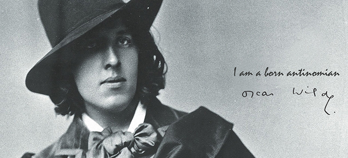

Oscar Wilde w anegdotach
Ksi¹¿ka Oscar Wilde o sztuce i ¿yciu jest prób¹ przybli¿enia refleksji Wilde’a o sztuce i ¿yciu, ukazania ich aktualnoœci, g³êbi, uniwersalnej wartoœci.
W pierwszej czêœci zosta³y wybrane i uporz¹dkowane tematycznie jego wypowiedzi na temat sztuki i ¿ycia (podano je w jêzyku angielskim i polskim t³umaczeniu). Czêœæ druga to omówienie problematyki zawartej w tych s¹dach. Appendix zawiera m.in. szczegó³owe kalendarium, informacje dotycz¹ce adaptacji utworów oraz opinie znanych postaci odnosz¹ce siê do Wilde’a b¹dŸ jego twórczoœci.
Kontakt i zamówienia: mywildbook@gmail.com

Wydawnictwo: WILDBOOK
Rok wydania: 2010
Oprawa: twarda
Format: 205 × 145
Liczba stron: 224
Cena: 42 z³
ISBN: 978-83-930701-0-7
OSCAR WILDE

Oscar Wilde (1882), fot. Napoleon Sarony, Ÿród³o: Wikimedia Commons (modyfikacja w³asna)
Cech¹ zaprezentowanych anegdot jest oczywiœcie humor, ale humor wyj¹tkowo aforystyczny, oparty na paradoksach i antytezach. One bowiem stanowi¹ istotê ¿ycia i twórczoœci Oscara Wilde’a – artysty, który nie przystaje do ¿adnych schematów, ³amie konwencje, ukazuje niejednoznacznoœæ, z³o¿onoœæ rzeczywistoœci, podwa¿a bezrefleksyjnie powtarzane banalne s¹dy.
Czytelnicy, a niejednokrotnie te¿ wytrawni krytycy, czêsto formu³uj¹ opinie dalekie od przekonañ Wilde’a, gdy¿ jego szokuj¹ce paradoksy zawieraj¹ s¹dy pozornie siê wykluczaj¹ce. Wilde z przeciwieñstw tworzy jednak wypowiedŸ spójn¹ i udowadnia, ¿e „tylko teorie niebezpieczne maj¹ wartoœæ intelektualn¹”. Jego wypowiedzi s¹ form¹ prowokacji, uwydatniaj¹ uproszczenia w pogl¹dach ogólnie przyjêtych i bezkrytycznie przyjmowanych przez wiêkszoœæ ludzi, sk³aniaj¹ do myœlenia, analizy, odrzucania stereotypów, poszukiwania w³asnej indywidualnoœci, gloryfikuj¹ wolnoœæ.
Wilde by³ obdarzony wyj¹tkowym poczuciem humoru, kocha³ piêkno, emanowa³ optymizmem i pogod¹ ducha, a jednoczeœnie g³êboko odczuwa³ tragizm ¿ycia. Zarzucano mu amoralizm, a on gloryfikowa³ dobro. Pisa³, ¿e „serce z kamienia to z³o ¿ycia i sztuki”. Cechowa³a go wyj¹tkowa empatia, wra¿liwoœæ na cierpienie i ból, zarówno ludzi mu bliskich, jak i obcych. Z pozoru sceptyk i relatywista, by³ moralist¹, obroñc¹ zasad etycznych, a jego – niegdyœ gorsz¹ce – dzie³a mo¿na odczytaæ jako przypowieœci moralne. Bliskie by³o mu has³o „sztuki dla sztuki”, gloryfikowa³ piêkno, oryginalnoœæ i nowatorstwo, ale równoczeœnie krytykowa³ pusty estetyzm, tworzy³ tradycyjne fabu³y, teatr konwersacyjny, w którym dominuje intelektualny dialog, nie rezygnowa³ z klasycznych schematów gatunkowych, stosowa³ realistyczne obrazowanie.
Wilde chcia³ tworzyæ ¿ycie wedle praw sztuki, uczyniæ je piêknym. Kreowa³ sytuacje i w³asne zachowania, w czym pomaga³a mu niezwyk³a wyobraŸnia. Ta sztuka ¿ycia tworzona by³a – wedle jego s³ów – jedynie dla przyjemnoœci i radoœci twórcy. Warto dodaæ, ¿e z pewnoœci¹ te¿ – odbiorcy. Mówi³ w sposób porywaj¹cy, mistrzowsko improwizowa³. Swoje historie, aforyzmy, paradoksy powtarza³, wci¹¿ je zmieniaj¹c – udoskonala³ je tak, aby potêgowaæ wywierane na odbiorcach wra¿enie.
I wci¹¿ zaskakuje, zdumiewa, demaskuje komuna³y, poszerza granice postrzegania rzeczywistoœci. Niejednokrotnie bywa traktowany jako pisarz anachroniczny, a zarazem nieustaj¹co i w znacznym stopniu wp³ywa na œwiatow¹ kulturê, jest czytany i uwa¿any za jednego z najwybitniejszych autorów anglojêzycznych.
Anegdoty zosta³y opracowane na podstawie:
- Trevor Fisher, Oskar Wilde i Bosie. Fatalna namiêtnoœæ, t³um. Irena St¹por, Wydawnictwo Ksi¹¿kowe Twój Styl, Warszawa 2004.
- Nic nie mog³o byæ inaczej. Listy Oskara Wilde’a, t³um. i oprac. Danuta Piestrzyñska, Wydawnictwo Ksi¹¿kowe Twój Styl, Warszawa 2005.
- Jan Parandowski, Król ¿ycia, Iskry, Warszawa 1984.
- Henry Pearson, Oskar Wilde, t³um. Jadwiga Dmochowska, PIW, Warszawa 1953.
- Jolanta Pol, Oscar Wilde o sztuce i ¿yciu, t³um. Jolanta i Krzysztof Pol, WILDBOOK, £ódŸ 2010.
- Oskar Wilde, Portret Doriana Graya, t³um. Maria Feldmanowa, Siedmioróg, Wroc³aw 1997.
Wypowiedzi Wilde’a w wielu przypadkach zosta³y dostosowane do formy anegdoty, ale sens jego s³ów nie uleg³ zmianie.